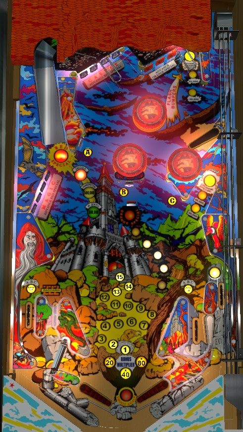

Not to be confused with Magic (Stern Electronics, 1979), Magic City / Magic Town (Williams, 1967), or Mystery Castle (Alvin G. & Co, 1993).
Complete the orange drop targets in the upper right or hit the recessed Advance Orange standup on the right three times to raise the center orange drop target and increase its value. Complete blue drop targets to advance the ramp value; after 3 advances, a full shot to the ramp scores a Red Special, but if this special is set to award a free game or extra ball instead of 4,500,000 points, it may be worth not lighting the Red Special, and instead advancing the ramp value to Zankenstein only for a repeatable 1,000,000 points. Be prepared to use the React flipper in the right out lane.
A plunged ball goes to the upper right flipper, which can shoot the 3-bank or orange drop targets or the hidden Tunnel lane. The Tunnel lane scores and advances the lit value (10,000 unlit -> 30,000 -> 50,000 -> Advance Orange Special), and causes the pop bumpers to flash for 1,000 points instead of 100 for the rest of the ball. Each drop target down in the orange 3-bank scores 20,000 points and a bonus advance; completing the bank also advances the Orange Special in the center of the playfield.
Each target down in either of the two 4-banks of blue drop targets scores 20,000 points and a bonus advance. Clearing all of the targets on one bank (or both banks, if the game is set to hard settings) lights a Monster on the left ramp and resets those bank(s). Behind the drop targets in each of the blue 4-banks is a standup target that scores 50,000 points.
The left ramp has three switches on it, corresponding to the three Monsters: Zekyll, Zankenstein, and Zaccula. If no Monsters are lit, any ramp shot scores 50,000 points. If Zekyll is lit, making it past the first switch on the ramp scores 300,000 points. If Zankenstein is lit, making it past the second switch on the ramp scores 500,000 points. If Zaccula is lit, making it past the third switch on the ramp scores a Red Special and resets all lit Monsters. Red Special can score a free game, an extra ball, 4,500,000 points, or a "superbonus", which lights the word Superbonus on the backglass and does nothing else (used in some places to signify an earned free drink, or similar). If the Special award is not meaningful to you, try to advance the ramp to Zankenstein only and hit it repeatedly for 800,000 points per shot, rather than lighting a Special and risking losing all lit Monsters.
Depending on game settings, it may require completing both sets of blue drop targets to advance the left ramp, and a single left ramp advance may award 2 monsters instead of just 1.
Shooting the upper right Tunnel 4 times, shooting the middle right standup target 4 times, or completing the orange bank of drop targets in the upper right advances the Orange Special. Advancing the value of the Orange Special raises the center drop target, allowing its current value to be collected. Center drop target values are 100,000 - 200,000 - 300,000 - 400,000 - 500,000 - Orange Special award. The Orange Special award can be a free game, an extra ball, 1,000,000 points, or a superbonus. Collecting the Orange Special award resets the center drop target value sequence. On easy settings, advancing the Orange Special once may increase the center drop target value by 2 levels.
Hit a lit target to score 10,000 points and unlight it. Unlit targets score 1,000 points. Unlight all of ABC to advance the bonus multiplier in the sequence 20x-40x-80x and reset the ABC lights.
On the left, the in and out lane are reversed, with the in lane being closer to the edge of the table and crossing over the out lane before leading to the flippers. However, unlike most games with a reversed in/out lane, the junction where the two meet is not directly below the out lane entrance, making it easier for an in lane ball to choke up and fall out while also making it easier for an out lane ball to rattle back in towards the flippers.
On the right, the in and out lanes are in the correct order, and the right out lane has a React! feature. When the right out lane is lit, React! is ready, meaning you get one chance at a well timed flip of the right flipper where the white flipper that makes up part of the in/out lane rail will flip outwards and fling the ball back up the out lane. Doing this unlights the right out lane; to relight it, you will need to either hit any drop target in any of the 3 banks (on easy settings) or clear one of the 3 drop target banks (on hard settings. Orange bank is easiest).
Out lanes always score 30,000 points. In lanes score 1,000 points and a bonus advance when lit, or 30,000 points plus a bonus advance and a spotted ABC letter when lit. One in lane is lit at a time and they alternate based on slingshot hits.
Base bonus is advanced by the in lanes and any drop target or standup target. Bonus multiplier is advanced in the sequence 20x-40x-80x by completing ABC via hitting lit white standup targets or spotting letters from lit in lanes. Max bonus is 80x 15,000 = 1,200,000 points. There is no mid-ball bonus collect, and there is no holdover for the base bonus or multiplier.
On the final ball of the game (e.g. ball 3 of a 3-ball game), the ball in play display will read "Game Time Bonus: 10" as soon as the ball enters the playfield. During this final ball, every 3rd switch hit anywhere on the playfield adds 1 to the Game Time Bonus. Immediately after this final normal ball drains, the Game Time Bonus begins. Game Time Bonus is a timed bonus ball with unlimited ball save for as long as there is time on the clock.
If you drain during Game Time Bonus: a new ball will be fed to the shooter lane and play continues with no penalty other than the clock continuing to run.
If you tilt during Game Time Bonus: the entire playfield will go dark and the ball will be allowed to drain, with no further points being scored. The entire end of ball bonus including multiplier will be reset without being scored. If there is still time on the clock when the ball reaches the out hole, play will continue.
When Game Time Bonus ends: the announcer will count down your final 10 seconds on the clock. When the clock hits 0, all playfield lights go dark and the ball is allowed to drain, with no further points being scored. After the ball reaches the out hole, your end of ball bonus is scored, and the game either enters Game Over mode or transitions to the next player, who will play their final normal ball immediately followed by their Game Time Bonus ball.
If you collect an extra ball during Game Time Bonus: the clock immediately stops, and the previous rule of "every 3rd switch adds 1 to the clock" applies. When the ball drains and the extra ball is used, the Game Time Bonus ball will continue.
Remember that all players play their Game Time Bonus ball immediately after their final standard turn, and that the Game Time Bonus clock continues to run while the ball is in the shooter lane waiting to be plunged. Note as well that "seconds" of Game Time Bonus may not be equivalent to real-life seconds.